Conics
Conics (or conic sections) are flat curves obtained by intersecting a double cone (two cones joined at their apex) with a plane. These curves are fundamental in mathematics, analytical geometry, and applications such as optics, astronomy, and engineering. They were first studied by Apollonius of Perga in Ancient Greece, and today they are described by quadratic equations in the Cartesian plane.

Ellipse
An ellipse is a simple closed plane curve defined as the geometric locus of all points in a plane such that the sum of their distances to two fixed points called foci is constant (greater than the distance between the foci). It is equivalent to a conic section (oblique cut of a cone) or the affine image of a circle.
An ellipse is a flat geometric figure formed by all points whose sum of distances to two fixed points, called foci, is constant. It has two axes: the major axis, which is the longest, and the minor axis, which is the shortest. Its shape depends on the values of a, b, and its position from the center (h, k).

Equations of an Ellipse
| Case | Equation | Center | Relationship | Description |
| Horizontal axis | 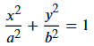 | ( 0 , 0 ) | 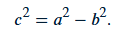 | The ellipse extends further along the x-axis. |
| Vertical axis | 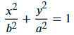 | ( 0 , 0 ) | It extends up and down along the y-axis. | |
| Horizontal axis | 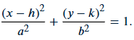 | ( h , k ) | Same as the original, but moved from the Center. | |
| Vertical axis | 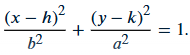 | ( h , k ) | Ellipse centered at (h,k) and elongated along the y-axis |
In the equations of the ellipse, (h,k) represents the center of the figure.
- h indicates the displacement of the center on the x-axis (left or right).
- k indicates the displacement on the y-axis (up or down)
If h=0 and k=0, the ellipse is centered at the origin. If they change, the ellipse moves to a new position without altering its shape.
Parabola
A parabola is a flat, open, symmetrical curve that belongs to the group of conic sections. It is obtained by intersecting a double cone with a plane parallel to one of the cone's generatrices. Geometrically, the parabola is defined as the geometric locus of points on a plane that are equidistant from a fixed point called the focus and a fixed line called the directrix.
The parabola may depend on its orientation. For example, the equation for vertical parabolas is: (x-h) ^ 2 = 4p (y-k). If the parabola is horizontal, the equation is: (y-k) ^ 2= 4p (x-h) where (h,k) is the vertex and p is the distance from the vertex to the focus.

Cases or equations of a parabola
| Position | Opens toward | Equation | Guideline | Vertex | Spotlight |
| Vertical axis | Up | x^2 = 4py | y = - p | v = ( 0 , 0 ) | f = ( 0 , p ) |
| Vertical axis | Below | x^2 = -4py | y = p | v = ( 0 , 0 ) | f = ( 0 , - p ) |
| Horizontal axis | Right | y^2 = 4px | x = - p | v = ( 0 , 0 ) | f = ( p , 0 ) |
| Horizontal axis | Left | y^2 = -4px | x = p | v = ( 0 , 0 ) | f = ( - p , 0 ) |
| Vertical axis | Up | ( x - h )^2 = 4p( y - k ) | y = k - p | v ( k , h ) | f ( h , k + p ) |
| Vertical axis | Below | ( x - h )^2 = -4p( y - k ) | y = k + p | v ( k , h ) | f ( h , k - p ) |
| Horizontal axis | Right | ( y - k )^2 = 4p( x - h ) | x = h - p | v ( k , h ) | f ( h + p , k ) |
| Horizontal axis | Left | ( y - k )^2 = -4p( x - h ) | x = h + p | v ( k , h ) | f ( h - p, k ) |
In the case of the general equation
| Position | Equation General |
| Horizontal axis | y^2 + Dx + Ey + F = 0 |
| Vertical axis | x^2 + Dx + Ey + F = 0 |
Hyperbole
According to Luis Castro Perez, "The hyperbola is the geometric locus of all points whose difference in distance to two fixed points, called foci, is constant and equal to 2a"(Lectura Sugerida, La Hipérbola, Luis Castro Perez.)
Cases o ecuaciones de una Hyperbole
| Position | Equation | Center | Vertex | Spotlight | B - B |
| Horizontal axis | 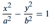 | ( 0 , 0 ) | ( a , 0 ) , ( -a , 0 ) | ( c , 0 ) , ( -c , 0 ) | ( 0 , b ) , ( 0 , -b ) |
| Vertical axis | 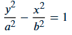 | ( 0 , 0 ) | ( 0 , a ) , ( 0 , -a ) | ( 0 , c ) , ( 0 , -c ) | ( b , 0 ) , ( b , 0 ) |
| Horizontal axis | 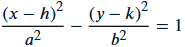 | ( h , k ) | ( h + a, k) , ( h , -a, k ) | ( h + c, k ) , ( h - c, k ) | ( h, k + b ) , ( h,k-b) |
| Vertical axis | 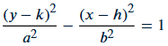 | ( h , k ) | ( h, k + a ) , ( h, k - a ) | ( h, k + c ) , ( h, k - c ) | ( h + b, k ) , ( h-b,k) |
Asynthota
| Position | Equation |
| Horizontal axis | 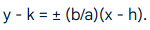 |
| Vertical axis | 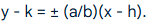 |
Circumference
The circumference of a conic is obtained from a plane section perpendicular to the edge of the cone. The circumference has the same distance from any point at its ends to another point called the center. As Edu.ar (n.d.) explains, the circumference is defined as a closed, plane curve whose points are equidistant from another point called the center. Figure 1 shows graphically where the circumference can be found from the conic.

Characteristics of a circle
The following table shows the main elements that characterize the circumference
| Center | A point that is equidistant from different points on the circumference. | 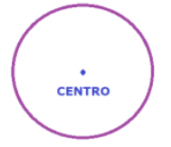 |
| Radio | Segment connecting the center with any point on the line. | 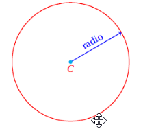 |
| Diameter | A straight line that passes through the center and connects the two opposite points on the circumference. | 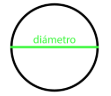 |
| Rope | Line connecting two points on the circumference. | 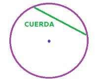 |
| Secant line | Line segment that intersects two points on the circumference. |  |
| Tangent line | A line that touches the circumference at one point and is perpendicular to the radius. |  |
Equations of a circle
The equation of a circle is defined according to where its center is located, as shown below:
| Case | Center | Equation |
| 1. When the Center is at the origin | When the center is at the point (0,0) | 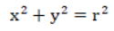 |
| 2. When the center is displaced from the origin | The center is located at a point other than (0,0) | 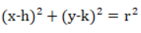 |
| 3. Canonical equation | It is a canonical equation of a circle because the squared terms have the same sign and coefficient. |  |